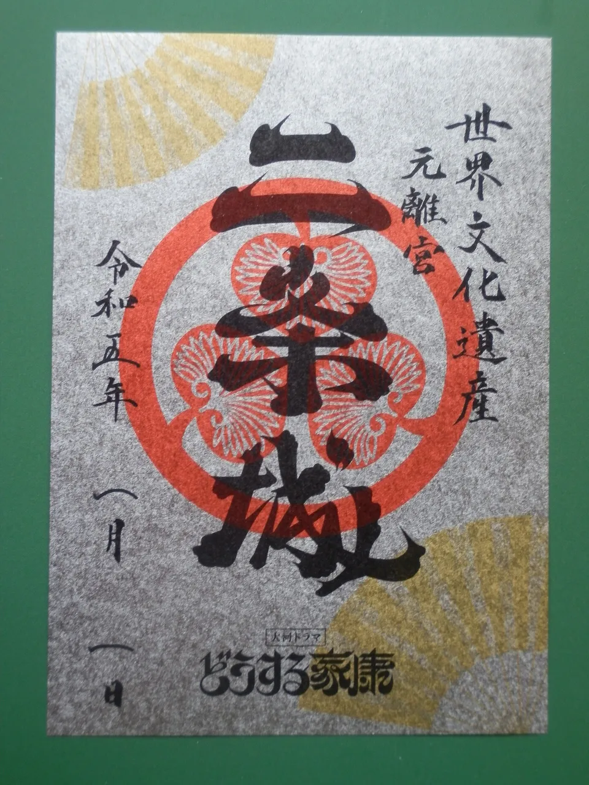
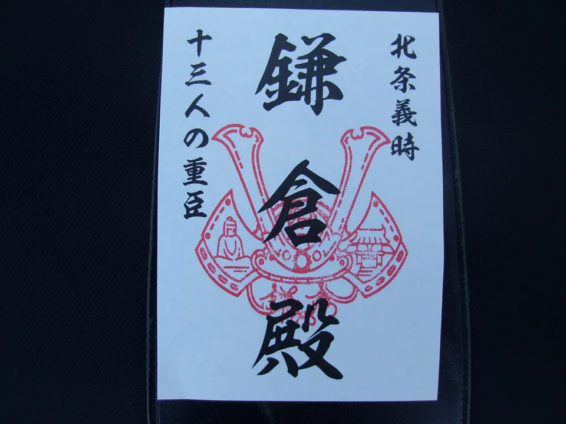
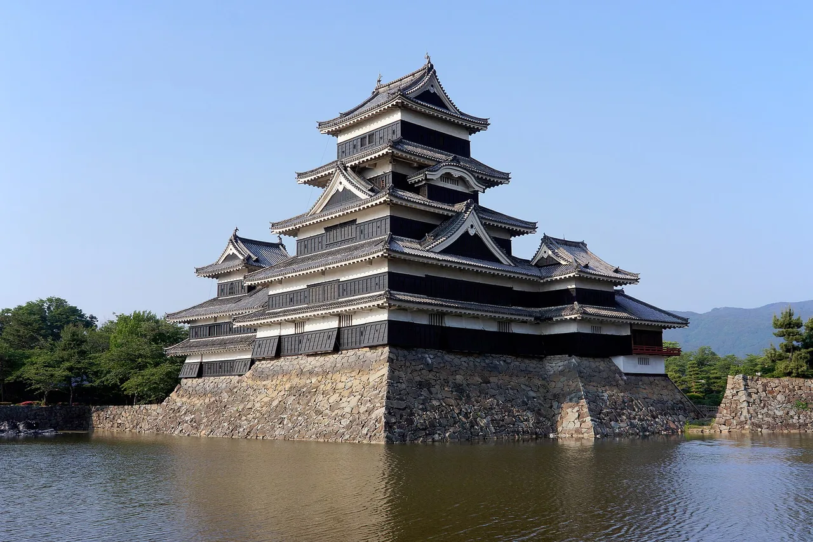
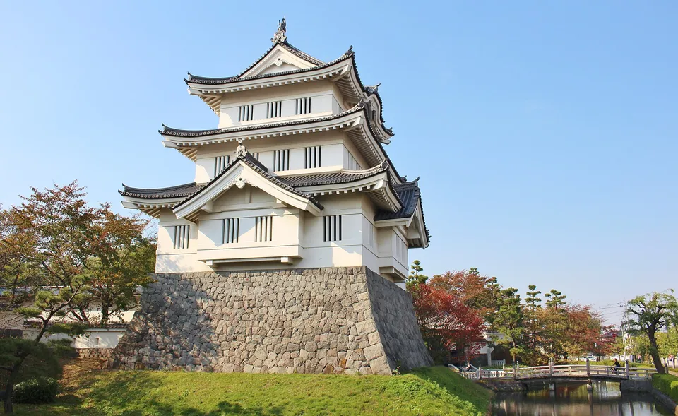
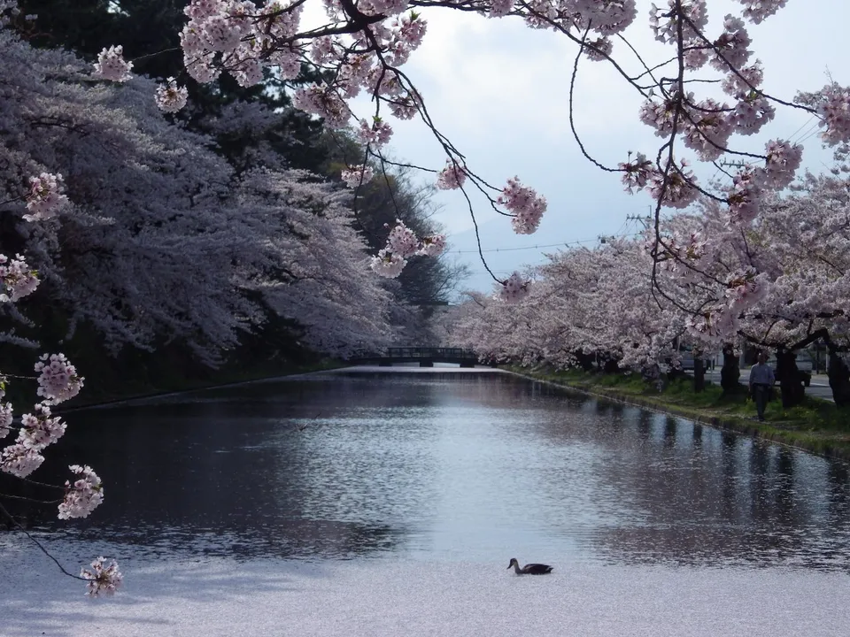
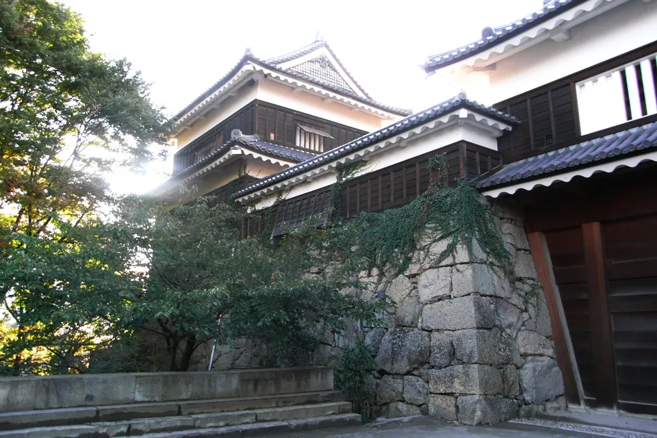
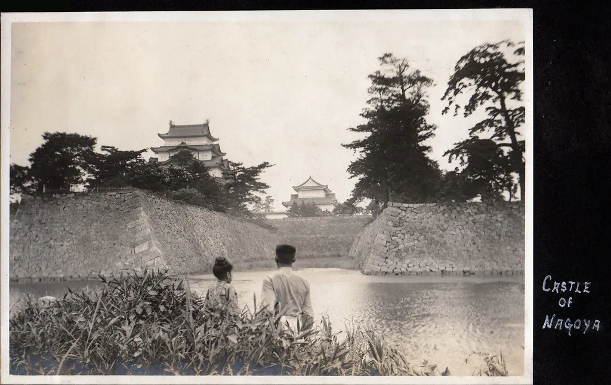
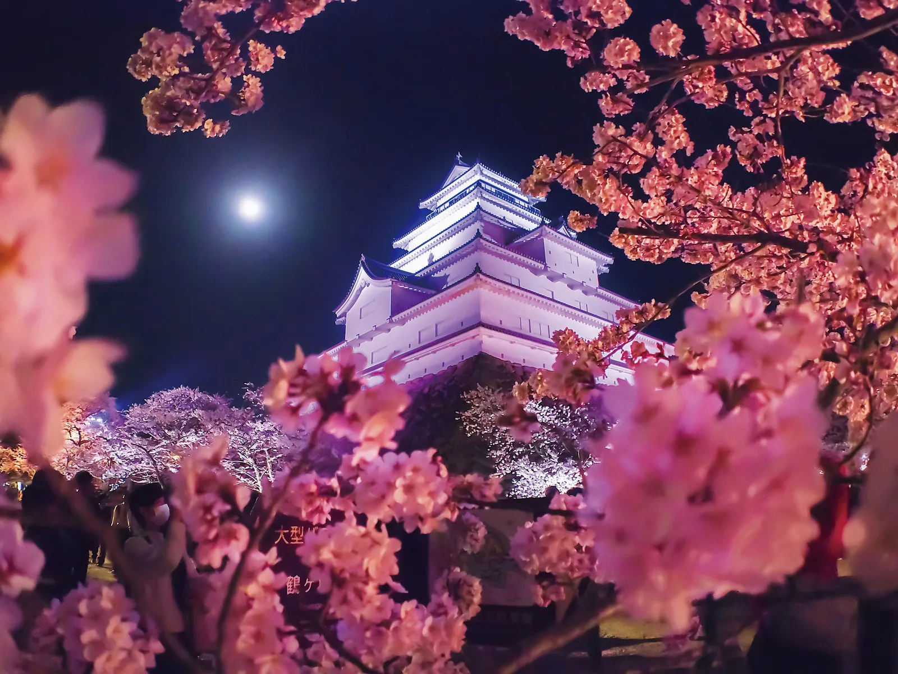

Gojoin: collecting Japan's castle seals, castle by castle
A gojoin (御城印) is a washi-paper seal-sheet sold at a Japanese castle — the castle's name in bold calligraphy, the crests of the lords who held it, and the date, handed to you in an envelope for a few hundred yen. It looks like a small thing. It is not: Japan's biggest castle-fan database, Kōjōdan, now tracks more than 2,100 castles and castle sites selling gojoin, with over 13,000 designs catalogued — and the line-ups rotate with the seasons, which is exactly what turns a castle visit into a collecting habit. This guide covers what gojoin are, what they cost, the limited editions worth planning around, the dedicated books collectors use, and a sensible first route. For the free official stamp rally — a different system entirely — see our 100 Famous Castles guide.

What a gojoin is (and isn't)
A gojoin is the castle cousin of the temple-and-shrine goshuin — but the two follow different rules. A goshuin is usually brush-written by hand in your book on the spot, as a record of worship. A gojoin is almost always pre-printed on a loose sheet of washi paper (書置き, kakioki), sold over the counter as a commemorative souvenir. You don't hand your book over; you receive a finished sheet, often with the visit date stamped or written in at purchase.


Photos: A gojōin from Nijō Castle, Kyoto — 京都新観光提言懇談会メンバー, CC BY-SA 4.0, via Wikimedia Commons · A commemorative gojōin — Indiana jo, CC BY-SA 4.0, via Wikimedia Commons
Where do you actually buy one? At the ticket window, the castle shop, or the local tourist information centre — sometimes at a museum or city office nearby when the "castle" is a ruin with no staffed building. That last case is part of the charm: hundreds of the issuing sites are quiet hilltop ruins, and the gojoin is the town's way of giving visitors something to take home.
The 100 Famous Castles stamp rally is a free ink stamp pressed into an official book run by the Japan Castle Association. A gojoin is paid, unofficial, and issued castle-by-castle — over 2,100 sites versus the rally's fixed 200. Many castles offer both; they are separate collections. Full rally rules in our 100 Famous Castles guide.
The numbers: 2,100+ castles, ¥300 a sheet
Kōjōdan (攻城団), Japan's largest castle-visiting community site, maintains a running list of every castle known to sell gojoin. As of its August 2026 update the list stood at 2,130 castles — more than ten times the 200 castles of the official rally lists — and its companion catalogue documents over 13,500 individual designs, because most castles issue more than one.
Pricing is mercifully consistent. The standard sheet is ¥300, with the observed range running from about ¥200 to ¥1,760 — the upper end being special editions: gold-foil paper, anniversary sets, and the intricate cut-paper (切り絵) versions that have spread from the goshuin world. Budget ¥300–¥500 per castle and you'll rarely be surprised.
A young tradition: Matsumoto, around 1990

Gojoin feel ancient and are anything but. Matsumoto Castle is credited with selling the first "castle-visit commemorative seal" around 1990 — a local one-off that stayed a curiosity for nearly three decades. The nationwide boom only arrived after 2019, when castles across the country noticed the goshuin craze and realised they could offer their own version without needing a shrine's calligrapher: printed sheets scale in a way hand-brushed books cannot. That printing-first format is why the hobby exploded from one castle to two thousand in a handful of years — and why a small castle town with no famous keep can still put out a beautiful seal.
Limited, seasonal & cut-paper editions (the collector's hook)
If gojoin were static souvenirs the hobby would be a checklist. What makes it sticky is that castles rotate designs: cherry-blossom editions in spring, autumn-leaf editions in November, New Year editions, castle-anniversary editions, taiga-drama tie-ins whenever NHK's yearly historical epic touches the local lord. Serious collectors go back to the same castle in different seasons.


Photos: Oshi Castle — Yoshio Kohara, CC BY 3.0, via Wikimedia Commons · Hirosaki Castle — Taku, CC BY 4.0, via FIND/47
The main edition types you'll meet:
- Standard (通常版) — the castle's everyday design, usually ¥300.
- Seasonal (季節限定) — sakura, autumn leaves, snow scenes; sold only in the window.
- Event / anniversary (記念版) — castle-tower anniversaries, festival tie-ins, taiga-drama years.
- Cut-paper (切り絵) — laser-cut lacework designs, typically ¥500–¥1,000+; the fastest-growing premium format.
- Sets — multi-castle regional sets, such as five-castle "pilgrimages" that reward completing a local circuit.
Reading the crests: the history hidden in one sheet

Photo: Ueda Castle — Yamaguchi Yoshiaki, CC BY-SA 2.0, via Wikimedia Commons
The fastest way to enjoy gojoin beyond "pretty calligraphy" is to read the kamon (家紋) — the family crests printed on most sheets. A castle that changed hands often will stack several crests on one seal, which is a compressed history lesson: Ueda Castle prints the Sanada clan's six-coin crest (六文銭) — six coins to pay the ferryman into the afterlife, the badge of a family famous for fighting the Tokugawa twice and winning both sieges. Hikone carries the Ii clan's tachibana orange; Tokugawa-line castles show the hollyhock (葵). Spotting a crest you know on an unfamiliar castle's seal is the moment the hobby clicks.
Gojoin are loose sheets, so collectors keep them in a dedicated album — most use a pocket-type book that sheets slide into (no glue), and keep it separate from a hand-brushed shrine goshuin book. An accordion-fold goshuincho with deep pockets works well; see our goshuincho & stamp notebook guide for formats and sizes.
The "Check price" link is an affiliate link (Amazon). We may earn a small commission at no extra cost to you, and it never changes what we recommend. As an Amazon Associate, NihongoHub earns from qualifying purchases.
The gojoin book (御城印帳): pocket type vs paste type
Castles and castle shops sell dedicated gojōin-chō (御城印帳), and the format matters more than the cover art. The two systems:
| Pocket typeポケット式 | Paste type貼り付け式 | |
|---|---|---|
| How it holds sheets | Clear sleeves; sheets slide in | Glue each sheet onto the page |
| Reversible? | Yes — reorder or remove anytime | No — placement is permanent |
| Best for | Most collectors; keeps sheets flat and pristine | A finished, scrapbook-like album |
| Watch out | Oversized special editions may not fit standard pockets | Glue can wrinkle thin washi |
Many castles sell their own branded books (Matsumoto's is a classic first buy), and the specialist shop Sengokudama covers hundreds of castles' seals and books online — though purists insist a gojoin only "counts" if you bought it at the castle, standing where the keep stands. On the road, a plain A5 clear file keeps sheets flat until you're home.
Where to start: a first route that teaches the hobby
You could start anywhere — 2,100 castles means there is one near every itinerary — but these four stops teach the full range of what gojoin can be:


Photos: Nagoya Castle — A.Davey, CC BY 2.0, via Flickr · Tsuruga Castle — SQUAREZERO, CC BY 4.0, via FIND/47
- Matsumoto (Nagano) — the birthplace of the format, a National Treasure keep, and a branded gojoin book to start your collection. Nagano guide →
- Hikone (Shiga) — National Treasure keep, Ii clan crest, and an easy add-on from Kyoto. Shiga guide →
- Ueda (Nagano) — a ruin-with-gates castle that out-collects many big keeps thanks to the Sanada story and crest.
- Oshi (Gyōda, Saitama) — the "floating castle" of film fame, beloved for frequently rotating limited editions; pair it with Gyōda's rice-paddy art in summer. Saitama guide →
City-break collectors can substitute Nagoya (hollyhock crest, museum-grade Honmaru Palace next door — Aichi guide →) or Tsuruga Castle in Aizu-Wakamatsu (Fukushima guide →), whose red-tiled keep and Byakkotai history give its seasonal seals real weight.
Some links above are affiliate links. We may earn a commission at no extra cost to you. We only list services we'd use ourselves.
The Japanese you'll actually use
Gojoin hunting means small ticket windows and information desks. One question — "do you sell gojoin here?" — opens every door:
| Japanese | Reading | Meaning |
|---|---|---|
| 御城印はありますか？ | gojōin wa arimasu ka? | Do you sell gojoin here? |
| 御城印帳 | gojōin-chō | gojoin album — pocket or paste type |
| 書置き | kakioki | pre-written / pre-printed sheet (how gojoin are sold) |
| 限定 | gentei | limited edition — the word to scan for at the counter |
| 季節限定 | kisetsu gentei | seasonal limited edition |
| 切り絵 | kirie | cut-paper — the premium lacework format |
| 家紋 | kamon | family crest — the history printed on the sheet |
| 六文銭 | rokumonsen | the Sanada six-coin crest |
| 登城記念 | tōjō kinen | castle-visit commemoration — the phrase on many seals |
| 売り切れ | urikire | sold out — limited editions do this fast |
Want these to stick? The free JLPT battle quiz drills travel and culture vocabulary like this with spaced repetition.
Gojoin chain naturally with the rest of Japan's paper-and-pavement collections: the 100 Famous Castles stamp rally → (often at the same ticket window), goshuin — temple & shrine stamps →, cut-paper kirie goshuin →, and Japan's free public collectible cards →. Many travellers tick off several in one prefecture.
Common questions
Q. What is a gojoin?
A. A gojoin (御城印) is a washi-paper seal-sheet sold at a Japanese castle as a visit commemoration — the castle's name in calligraphy, the crests of its lords, and the date. Unlike a shrine goshuin it is pre-printed and purchased, not brush-written into your book.
Q. How many castles sell gojoin?
A. More than 2,100. The castle-fan database Kōjōdan tracked 2,130 castles selling gojoin as of August 2026, with over 13,500 designs catalogued — far more than the 200 castles of the official 100 Famous Castles lists.
Q. How much does a gojoin cost?
A. The standard sheet is about ¥300, with a full range of roughly ¥200 to ¥1,760. Seasonal, anniversary, gold-foil and cut-paper (kirie) editions sit at the top of that range.
Q. Where do I buy one at the castle?
A. At the ticket window, castle shop, or nearby tourist information centre. For unstaffed castle ruins, the seal is often sold at a local museum, city office, or station kiosk in town.
Q. Do I need a special book for gojoin?
A. Collectors use a dedicated gojōin-chō, usually a pocket-type album the loose sheets slide into. Most keep it separate from a hand-brushed shrine goshuin book, both for etiquette and because the formats differ.
Q. Is a gojoin the same as the 100 Famous Castles stamp?
A. No. The rally stamp is a free ink stamp in the official Japan Castle Association book, limited to 200 listed castles. Gojoin are paid souvenir sheets issued independently by each castle — over 2,100 of them. Many castles offer both.
Q. When did gojoin start?
A. Matsumoto Castle sold the first castle commemorative seal around 1990, but the nationwide boom only took off after 2019, riding the goshuin craze. The printed format let even small castle ruins join in, which is why the count grew so fast.
We're a Japanese family of three traveling all 47 prefectures with our kid, and this guide comes from that road. Our free newsletter 47 Notes from Japan shares the travel notes, collectible finds, and real-life Japanese that don't fit in a guide. No spam, unsubscribe anytime.